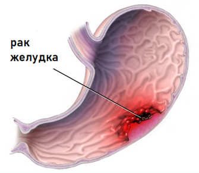
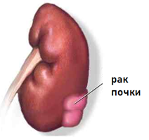
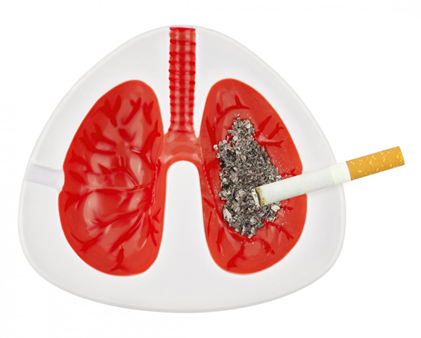

О вреде курения!
Курение -одна из самых значительных угроз здоровью человека.
По данным Всемирной организация здравоохранения.
Ежегодно табак приводит почти к 7 миллионам случаев смерти, из которых более 6 миллионов
случаев
происходит среди потребителей и бывших потребителей табака, и более 890 000 — среди
некурящих
людей,
подвергающихся воздействию вторичного табачного дыма. Если не будут приняты срочные меры,
число
ежегодных случаев смерти к 2030 году может превысить 8 миллионов.
О воздействии курения на организм
Курение табака приводит к зависимости.
У курильщиков достаточно быстро формируется привыкание к никотину, содержащемуся в табачных
листьях,
что обуславливает сильную потребность закурить снова и снова.
Когда человек пытается бросить курить, у него или нее могут быть симптомы отмены, среди которых:
- раздражительность
- снижение концентрации внимания
- проблемы со сном
- повышенный аппетит
- мощная тяга к табаку.
Помимо никотина в табачном дыму обнаруживается ряд других опасных химических веществ, таких как
смолы, радиоактивный полоний, мышьяк, свинец, висмут, аммиак, органические кислоты. Случаев
острого
отравления этими веществами практически не наблюдается в связи с тем, что в организм они
поступают
медленно, дозированно, однако эти вещества приводят к постепенному ухудшению здоровья.
При сгорании 20 г. табака в среднем образуется:
- 0,0012 г. синильной кислоты;
- Около 0,0012 г. сероводорода;
- 0,22 г. пиридиновых оснований;
- 0,18 г. никотина;
- 0,64 г. аммиака;
- 0,92 г. оксида углерода;
- Не менее 1 г. концентрата из жидких и твердых продуктов горения и сухой перегонки табака
Многие курильщики считают, что курение сигареты с фильтром
безопасно, но это не так. Если бы поглотители и фильтры обеспечивали полную защиту от вредных
веществ, то они бы поглощали и сам никотин, в таком случае эффект от курения не ощущался бы.
Курильщики легких сигарет также считают, что курение легких
сигарет
оказывает минимальное воздействие на организм.
Вред, наносимый курением любых сигарет одинаков для всех
курильщиков.
Помимо самого курильщика страдают и те, кто находится вокруг – так называемые пассивные
курильщики.
Длительное курение приводит к заболеваниям различных органов и систем.
Какой ущерб здоровью в целом наносит употребление табака?
Курение увеличивает риск смерти от рака и других заболеваний у
онкологических больных и здоровых людей.
Курение может стать причиной онкологического процесса в любом органе:
- мочевой пузырь
- кровь (острый миелоидный лейкоз)
- шейка матки
- кишечник
- пищевод
- почки и мочеточники
- гортань
- печень
- ротовая полость (горло, язык, мягкое небо и миндалины)
- поджелудочная железа
- желудок
- трахея, бронх и легкие
Курение наносит вред сердцу и кровообращению, увеличивает риск развития ишемической болезни
сердца,
инсульта, заболевания периферических сосудов (поврежденные кровеносные сосуды) и
цереброваскулярных
заболеваний (поврежденные артерии, которые снабжают мозг кровью).
Окись углерода из дыма и никотина увеличивают нагрузку на сердце, заставляя его работать
быстрее.
Они также увеличивают риск возникновения тромбов.
Фактически, курение удваивает риск сердечного приступа, стенокардии. Курящие люди имеют двойной
риск
смерти от ишемической болезни сердца, чем некурящие.
Курильщики, выкуривающие 5 или менее сигарет в день, могут иметь ранние признаки сердечно -
сосудистых заболеваний.
Если отказаться от курения
Спустя год после отказа от курения - риск развития сердечно - сосудистых заболеваний уменьшается вдвое, через 15 лет риск аналогичен риску того, кто никогда не курил.
У курящих людей увеличивается риск развития язвы, а также рака желудка. Курение может вызывать рефлюкс – заброс желудочного содержимого, в таком случае кислота из желудка может двигаться в обратную сторону – в пищевод.
Курение является важным фактором риска развития рака почки, и чем больше стаж курения, тем выше риск.
Исследования показали, что если регулярно выкуривать 10 сигарет в день, то в полтора раза чаще развивается рак почек по сравнению с некурящими. Если человек выкуривает 20 или более сигарет в день – риск увеличивается вдвое.

Курение вызывает преждевременное старение кожина 10-20 лет.
Отказ от курения предотвращает дальнейшее ухудшение состояние кожи, вызванное курением.
Курение может привести к снижению костной массы и повышению хрупкости костей. Женщины должны быть особенно осторожны, поскольку они чаще страдают от развития остеопороза, чем некурящие.
Курение повышает риск развития инсульта на 50%, что может привести к повреждению мозга и смерти.
Курение увеличивает риск развития аневризмы сосудов мозга. Это выбухание кровеносного сосуда,
вызванное
слабостью его стенки. Такое состояние может привести к субарахноидальному кровоизлиянию, которое
является одним из типов инсульта, и может вызвать обширное повреждение головного мозга и смерть.
В течение двух лет после прекращения курения риск развития инсульта уменьшится вдвое, и в течение пяти лет он будет таким же, как у некурящих.
Кашель, простуда, хрипы и астма - только начало. Курение может привести к смертельным заболеваниям, таким как пневмония, эмфизема и рак легких. Курение вызывает 84% смертей от рака легких и 83% смертей от хронической обструктивной болезни легких (ХОБЛ).
